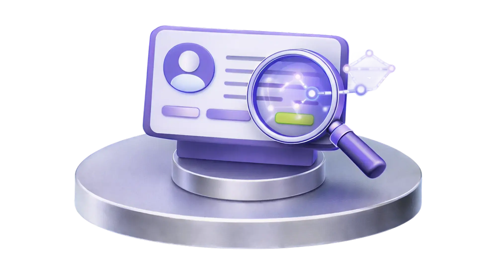
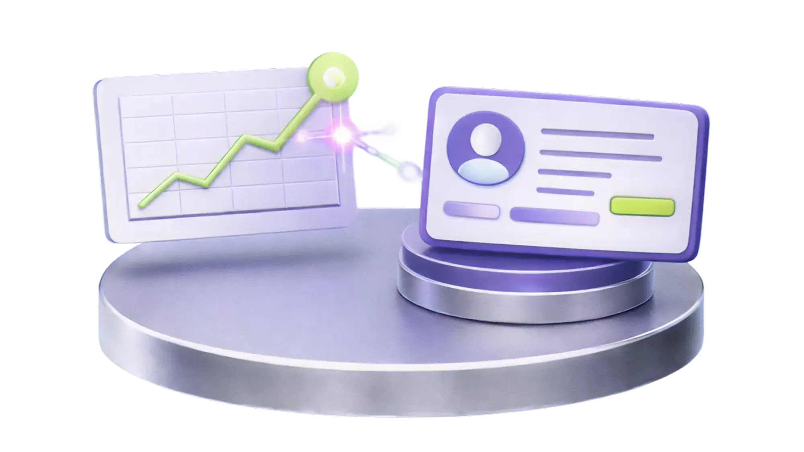

24/7 Autonomous Sourcing
Stackforce AI doesn't just search, it executes. It autonomously scours talent pools, runs deep-profile analysis to verify exact fit, and launches hyper-personalized outreach on its own. Wake up every day to an inbox full of pre-vetted, high-intent candidates ready to interview.

Instant Candidate Intelligence
Every bullet point, project, and gap on a candidate's profile — analyzed in seconds. Stackforce builds a comprehensive, hiring-manager-ready pitch that tells you exactly what they built, the specific skills they used, and whether they're a match for your role.
Hyper-Personalized Outreach at Scale
Top-tier candidates ignore generic recruiter spam. Build and launch campaigns personalized to every candidate and every job description. Get the scale of marketing automation with the personalization required to drive actual replies.

Predictive Hiring Intelligence
Stop guessing who will succeed. Stackforce models historical hiring data, role performance signals, and candidate trajectory to surface who is most likely to thrive — before you ever make an offer.